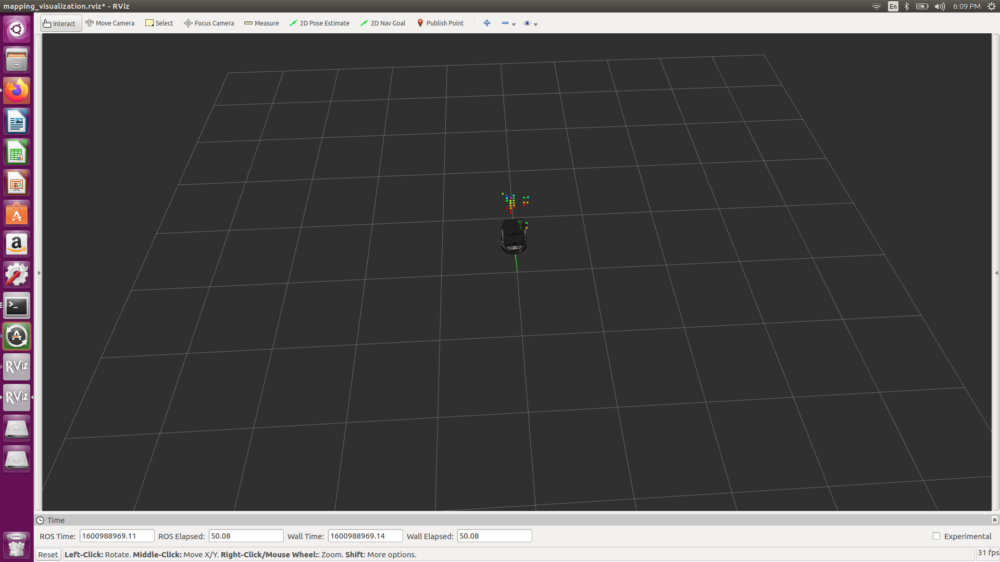

Introduction
The objective of this experiment is to demonstrate the strengths that TI's mmWave radar sensor has over a similarly priced lidar sensor. The lidar sensor used in this test has the capability to sense in only two dimensions, meaning that the sensor has no elevation capabilities. Lidar uses infrared wavelengths, so it will pass through translucent objects such as glass. Therefore, lidar will be unable to detect such materials. Lidar is the sensor of choice for most robotic applications and is often developed upon using the opensource Robot Operating System (ROS). This experiment will use ROS to analyze the sensor readings between the two sensors. The radar sensor used in this experiment is the IWR6843ISK. The robot used is the turtlebot 2. Reproducing this experiment requires the user to be familiar with the Industrial Toolbox lab "Autonomous Robotics with ROS for mmWave."
Scene
The following figure shows the scene to test the two sensors. There are four obstacles that the robot is intended to avoid. They are a small cardboard box, two larger cardboard boxes, and a glass sheet. It is expected of the radar to capture all of these obstacles, while the lidar will miss the short box and the glass sheet.
Setup
The radar and lidar sensors were tested individually. The radar is mounted as shown in Figure 2. Instructions to mount the radar are the same as described in the Industrial Toolbox lab "Autonomous Robotics with ROS for mmWave." To mount the lidar sensor to the turtlebot, a custom mount was designed and 3d printed. The sensor was then attached to the 3D print and bolted to the base of the turtlebot. This is shown in Figure 3.
|
Figure 2. IWR6843ISK mounted to Turtlebot |
Figure 3. Lidar mounted to Turtlebot |
|---|
Results
The following are captures of driving the robot throughout the scene. It can be clearly seen from the radar video that the smaller cardboard box and glass sheet are detected and mapped into the visualizer. However, the lidar sensor does not detect the same objects and causes collisions with those undetected objects. See our video comparison for more information
To further understand radar performance with each object, the radar was tested with each object: small box, big box, and glass sheet. The following table describes these results.
| Material | Sensor Setup | Lidar Result | Radar Result |
|---|---|---|---|
| Small box |
|
Because of the height of the box with respect to the lidar sensor, the lidar does not detect the small box. |
 Radar is able to detect the small box. |
| Big Box |
|
Lidar is able to detect the big box. |
Radar is able to detect the big box. |
| Glass Sheet |
|
Because light passes through glass, the lidar is not able to detect the glass sheet. |
Radar is able to detect the glass sheet. |

Conclusion
When comparing Texas Instruments' mmWave radar to a similarly priced 2D lidar, the radar has significantly more benefits. The radar is able to detect objects in three dimensions, while this lidar can only detect in two dimensions. The lidar does have a much higher angular resolution of 0.5 degrees compared to the radar's 15 degrees. This lidar has the ability to scan in 360 degrees, but the same can be accomplished with multiple radars. The radar is also able to detect glass and other transparent materials, while this lidar sensor can not. Though not tested here, the radar performance is matched in enviroments where smoke is prevalent and visibility is low.